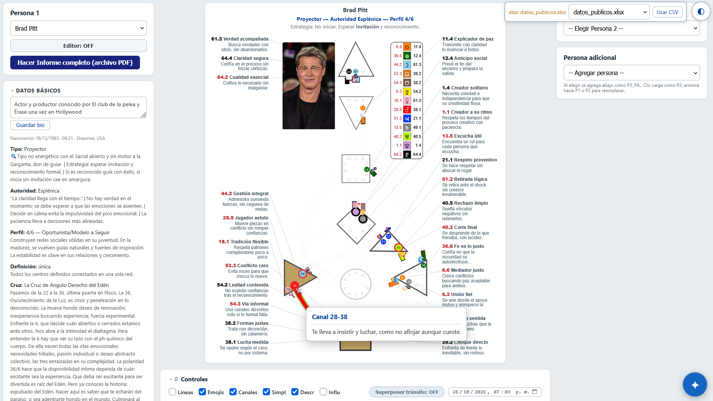
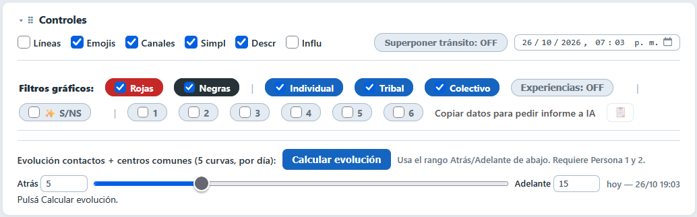
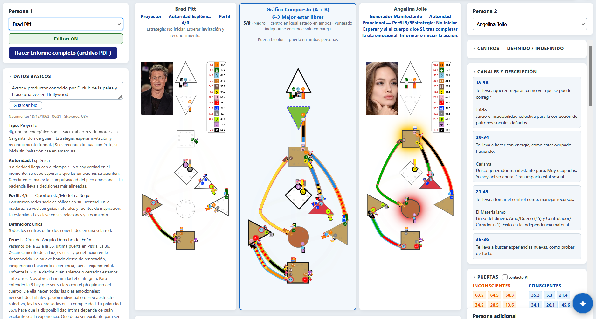
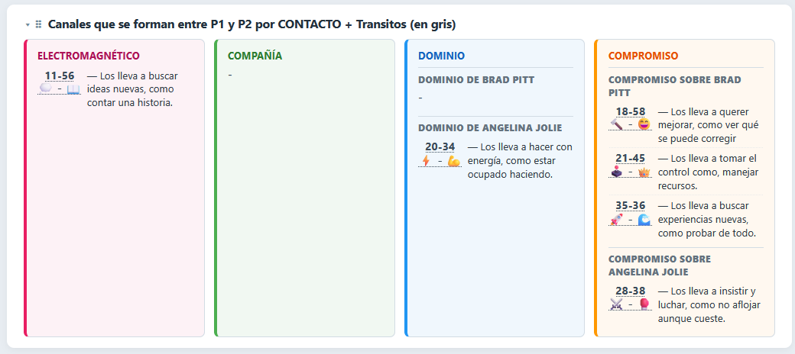
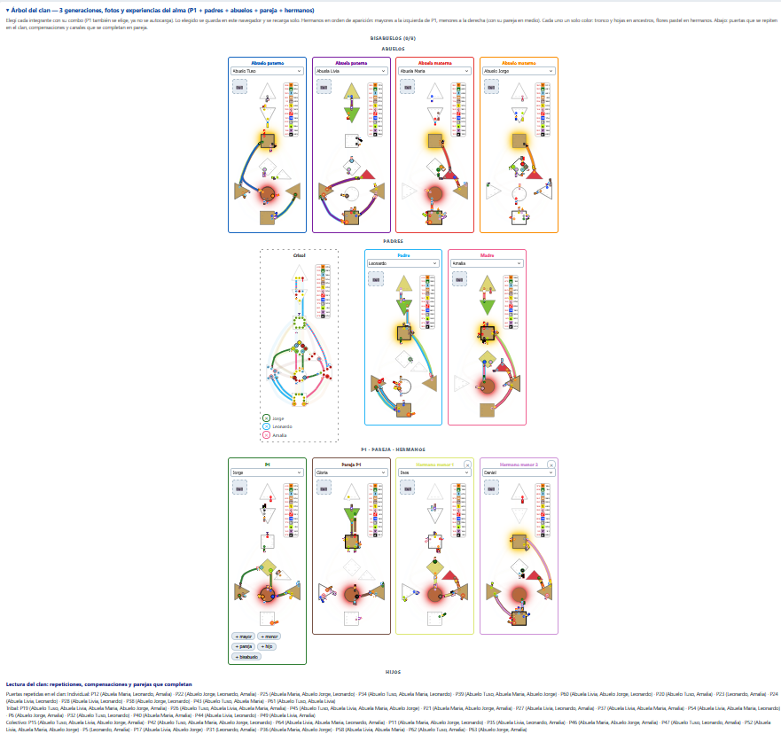

Alma Humana
Tu Gráfico de Diseño Humano en el navegador.
Probalo acá y, si te sirve, bajá el programa.
Esto es una demo. Todo lo que ves acá lo podés hacer con el programa instalado, pero con tus datos guardados en tu teléfono. La demo no guarda nada: si el servidor se reinicia, lo que cargaste se pierde.
🚪 Dos formas de empezar
👀 Ver una gráfica públicaElegís un nombre del listado y el gráfico aparece al instante. Es la forma más rápida de conocer la herramienta.
✍️ Cargar tus datosIngresás nombre, fecha, hora y lugar de nacimiento. Se explica más abajo, en
Cómo cargar tus datos.
👀 Ver una gráfica pública
- Abrí la demo.
- En Persona 1 (columna izquierda) elegí un nombre del listado.
- Listo: el gráfico se dibuja al instante y la ficha se arma sola.

Persona 1 con las descripciones activadas: cada puerta y cada canal con su explicación.
🧬 Qué te muestra
- Datos básicos: tipo, estrategia, autoridad, perfil, definición, cruz y Sol / Luna / Ascendente.
- Centros: los definidos en color y los indefinidos en blanco.
- Canales: los que tenés armados, con su descripción.
- Puertas: en rojo las inconscientes y en negro las conscientes.
🎛️ Controles: cómo mirar el gráfico
Abajo de todo está el panel Controles. Cada casilla cambia lo que ves.

El panel de Controles: visualización arriba, filtros de estudio abajo.
LíneasEl número de línea de cada puerta (1 a 6).
EmojisUn emoji con la función de cada puerta.
CanalesEl nombre del canal dibujado.
SimplAcorta los tramos largos: el dibujo queda parejo y limpio.
DescrMuestra descripciones de cada puerta y línea en el mismo gráfico.
InfluAtenúa los tramos según el planeta que los activa.
🕐 Superponer tránsito: agrega en gris las puertas del cielo de la fecha que elijas. Sirve para ver qué se activa hoy.
🎨 Filtros gráficos: mostrá solo puertas rojas o negras, solo un circuito (Individual, Tribal, Colectivo) o solo las puertas con la línea indicada (1 a 6). Es la forma de estudiar de a un tema por vez.
📋 Copiar datos: arma un texto con lo que estás viendo para pegarlo en una IA y pedirle un informe.
👥 Agregar Persona 2 y ver el compuesto
- En la columna derecha elegí una Persona 2.
- Al centro aparece el gráfico compuesto: la suma de las dos cartas.
- Debajo se abre la Dinámica Compuesta de Contacto, con los canales que se forman entre ustedes.

Persona 1, compuesto y Persona 2. El compuesto marca los centros que coinciden y las puertas que solo se activan en pareja.
⚡ ElectromagnéticoCada uno aporta una puerta distinta del mismo canal. Atracción y fricción intermitente.
🤝 CompañíaLos dos tienen el canal completo. Tema compartido y cómodo.
🎯 DominioEl otro tiene el canal completo y vos ninguna puerta.
🔗 CompromisoEl otro tiene el canal completo y vos una sola puerta.

Los cuatro tipos de contacto con un caso real: Brad Pitt y Angelina Jolie.
➕ Persona adicional: sumá P3, P4… al 50% para comparar sin cambiar la pareja. Un clic la pasa a Persona 2; también se puede arrastrar a Persona 1 o 2.
🔭 Opciones para estudiar
- Tránsitos: puertas del cielo de hoy o de otra fecha, superpuestas en gris.
- Evolución: cinco curvas día por día con los contactos y los centros en común. Necesita Persona 1 y 2.
- Informe PDF: el gráfico de Persona 1 más la ficha básica, listo para guardar o imprimir.
- Autotest Ser / No-Ser: preguntas armadas según tu tipo y tus centros abiertos.
🌳 Clan: tres generaciones
El árbol del clan suma a tu carta la de padres, abuelos, pareja y hermanos. Elegís cada integrante con su combo y la app cruza las tres generaciones.
- Puertas que se repiten en la familia.
- Condicionamientos: lo que no traés definido y tomás del tronco.
- Canales que se completan en pareja.
- Experiencias del alma en tres generaciones.

El árbol completo: abuelos, padres, Persona 1 con pareja y hermanos, y la lectura del clan al pie.
El clan se guarda en tu navegador, así no lo cargás cada vez que entrás.
✍️ Cómo cargar tus datos
- En Persona 1 tocá Editor: ON. Se abre el formulario.
- Completá nombre, fecha (DD/MM/AAAA), hora (HH:MM) y lugar. El lugar se busca escribiendo la ciudad; si no aparece, podés cargar latitud y longitud a mano.
- Tocá Calcular y después Agregar.
- La persona queda en el listado y la podés elegir cuando quieras.
Cuanto más exacta la hora, más fiable el gráfico. Si no la sabés, la app igual calcula, pero algunas puertas pueden cambiar.
💾 Dónde se guardan los datos
La demo no es un almacén. El servidor es gratuito y se reinicia: lo que cargues ahí puede desaparecer. Usala para probar, no para guardar tu trabajo.
Para trabajar en serio tenés dos caminos:
- Bajar el programa: los datos quedan en tu teléfono.
- Guardar en el navegador: la demo puede guardar una copia en tu propio navegador y recargarla al entrar. Está previsto, todavía no está activo.
⬇ Bajar el programa
La versión instalable hace lo mismo que la demo, pero guarda tus datos en el teléfono y funciona sin conexión.
- Descargá el archivo.
- En Ajustes > Seguridad activá Orígenes desconocidos.
- Abrí el APK desde Descargas y tocá Instalar.
No cargues datos de otras personas sin su permiso.